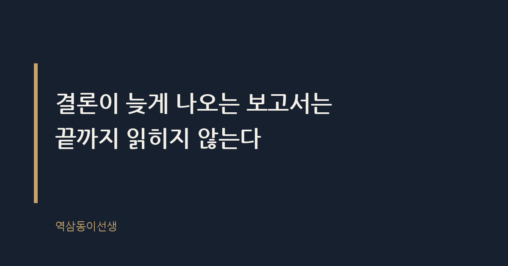
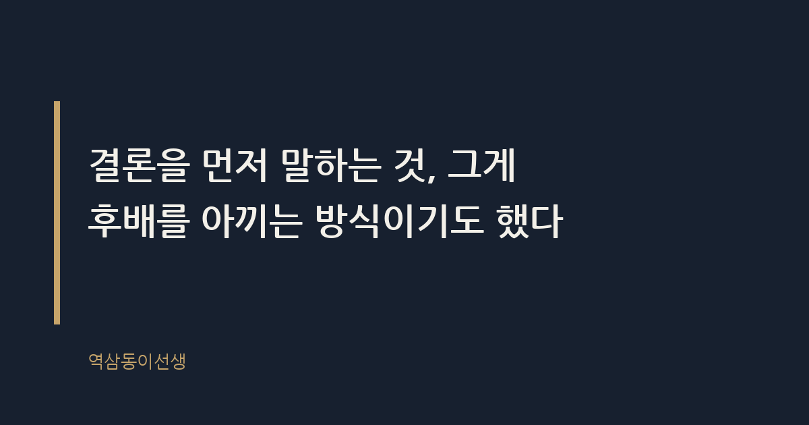

주제 보고서는 왜 결론부터 써야 하는가 (evergreen / office)
제목 후보
메타 설명 보고서를 결론부터 써야 하는 이유를 임원 회의실 사례로 풀었다. 두괄식 보고서의 정의, 읽히는 구조, 첫 문장 쓰는 법까지 한 번에 정리했다.
라벨 보고서작성법, 두괄식, 직장생활, 보고스킬, 커뮤니케이션, 업무꿀팁, 보고서결론부터쓰는법, 두괄식보고서예시, 임원보고요령, 보고서첫문장쓰는법, 신입사원보고서
실용 자산 예시 문장 모음 — 보고서 작성은 도구형 검색 의도가 강해, 상황별 두괄식/미괄식 문장을 바로 비교해 복사할 수 있게 표로 제시했다
발행 전 팩트체크
이미지 (Blogger 편집기에 드래그해 넣으세요)
도입부 사진 · ⓒ Goumbik / Pexels


월요일 아침 9시, 임원 회의실. 신입 시절 같은 팀이었던 김과장이 신사업 보고서를 들고 들어왔다. 첫 장은 시장 배경, 둘째 장은 경쟁사 동향, 그제서야 셋째 장에 가서야 "그래서 저희가 제안하는 것은"이 등장했다. 대표는 둘째 장에서 보고서를 덮었다. "결론부터 말해봐." 김과장은 그 자리에서 10분 넘게 서서 보고서에 이미 써 놓은 내용을 입으로 다시 설명해야 했다. 공들여 쓴 보고서는 끝까지 읽히지도 못한 채 책상 한쪽으로 치워졌다.
보고서는 결론부터 써야 한다. 근거와 배경, 데이터는 그 뒤에 따라붙어야 한다. 순서를 바꾸는 순간 보고서는 읽히지 않는 문서가 된다. 바쁜 상사일수록, 직급이 높을수록 이 원칙은 더 단호하게 적용된다. 결론이 늦게 나오는 보고서는 끝까지 읽히지 않는다. 읽히지 않는 보고서는 아무리 좋은 분석이 담겨 있어도 의사결정에 쓰이지 못한다.
두괄식 보고서란 핵심 결론과 실행 요청을 문서 맨 앞, 첫 문단이나 첫 줄에 배치하는 보고서를 말한다. 미괄식이란 배경과 근거를 먼저 제시하고 결론을 맨 마지막에 두는 글 구조다. 학교에서 배운 기승전결, 서론-본론-결론 글쓰기는 전형적인 미괄식이다. 문제는 보고서가 에세이가 아니라는 점이다. 보고서를 읽는 사람은 글의 흐름을 음미하러 오는 게 아니라 결정을 내리러 온다.
임원급이 보고서 한 건에 실제로 쓰는 시간은 길어야 3~5분 안팎으로 알려져 있다. 하루에 결재해야 할 문서, 참석해야 할 회의, 처리해야 할 메일이 겹겹이 쌓여 있는 사람에게 열 장짜리 보고서를 처음부터 끝까지 정독할 여유는 없다. 그가 하는 건 정독이 아니라 스캔이다. 첫 문단에서 결론과 숫자를 확인하고, 나머지는 필요할 때만 들춰 본다. 첫 문단에 결론이 없으면 그 보고서는 스캔 단계에서 이미 탈락한다. 두괄식 보고서가 통과되기 쉬운 이유는 의사결정자의 이런 읽기 습관에 구조 자체가 맞아떨어지기 때문이다.
예전 대표 한 분은 보고서를 엘리베이터에서 읽었다. 1층에서 17층까지 올라가는 시간이면 충분하다고 했다. 실제로 그는 엘리베이터 문이 열리기 전에 결재란에 사인을 하고 내렸다. 그 짧은 시간에 설득이 끝나지 않는 보고서는 그의 책상 위에서 다시 한 번 작성자를 호출했다. 임원의 시간을 설계하듯 쓰는 보고서와, 작성자의 사고 흐름대로 쓰는 보고서는 결과가 완전히 달랐다. 그 대표 밑에서 일하던 팀장들은 아예 보고서 표지 바로 아래, 본문이 시작되기도 전에 "결론: " 이라는 글자를 굵게 박아 넣는 습관을 들였다. 형식이 사람을 바꾼 셈이다.
보고서가 미괄식으로 쓰이는 이유는 학교 글쓰기 교육이 기승전결 구조를 표준으로 가르쳤기 때문이다. 초등학교 때부터 글은 도입-전개-결말 순서로 쓰라고 배운다. 그 틀이 몸에 배면 직장에 와서도 보고서를 소설처럼 쓴다. 배경을 설명하고, 분석을 거쳐, 마지막에 결론에 도달하는 순서가 자연스럽다고 느낀다.
언론계에는 정반대 전통이 있다. 전신으로 기사를 송고하던 시절, 기자들은 통신선이 끊기거나 편집자가 지면 사정으로 기사 뒷부분을 잘라내도 핵심이 살아남도록 가장 중요한 사실을 맨 앞에 썼다. 역피라미드 구조라 불리는 이 방식이 지금도 뉴스 기사의 기본 틀로 남아 있다. 보고서도 다르지 않다. 상사가 중간에 자르고 나가도, 다음 회의가 바로 잡혀 있어도 맨 앞줄만 읽으면 핵심이 전달돼야 한다.
구조적으로 보면 미괄식 보고서는 보고자와 보고받는 사람 사이의 입장 차이에서 비롯된다. 보고자는 자신이 들인 노력과 과정을 인정받고 싶어 배경부터 풀어낸다. 보고받는 사람은 과정이 아니라 선택지와 결론이 궁금하다. 이 어긋남이 쌓이면 보고자는 점점 더 긴 서론을 쓰게 되고, 상사는 점점 더 빨리 보고서를 덮게 된다.
신입이나 연차 낮은 후배일수록 두괄식 보고를 어색해한다. 결론부터 치고 들어가면 상사에게 무례해 보이지 않을까, 건방져 보이지 않을까 걱정한다. 실제로 한 후배는 "본부장님, 이번 캠페인은 중단하는 게 맞습니다"로 보고를 시작했다가 말투가 너무 단정적이었나 싶어 중간에 말을 흐린 적이 있다. 결과는 반대였다. 본부장은 오히려 "그래서?"라며 다음 말을 재촉했다. 결론을 먼저 던진 건 무례가 아니라 상대의 시간을 존중하는 태도였다.
두괄식과 무례함은 다른 층위의 문제다. 결론을 먼저 말해도 어조와 표현은 공손할 수 있다. "제 생각에는 이번 캠페인을 중단하는 편이 낫다고 판단됩니다. 이유를 말씀드리겠습니다"처럼 쓰면 결론은 앞에 있지만 태도는 충분히 정중하다. 순서를 바꾸는 것과 예의를 지키는 것은 서로 충돌하지 않는다.
후배들이 가장 자주 묻는 질문이다. 좋은 소식이야 결론부터 말해도 되지만, 나쁜 소식까지 그렇게 해도 되냐는 것이다. 답은 그렇다. 오히려 나쁜 소식일수록 더 그렇다. 생산 라인에 품질 문제가 생겼을 때 한 후배가 "지난주 금요일부터 원자재 쪽에 변동이 있었는데요"로 보고를 시작한 적이 있다. 3분을 듣고 나서야 라인이 멈췄다는 사실을 알았다. 그 3분 동안 상사는 더 큰 문제가 생긴 줄 알고 속으로 최악의 시나리오를 그리고 있었다.
나쁜 소식을 뒤로 미루는 이유는 보고자 스스로 그 순간의 불편함을 줄이고 싶어서다. 하지만 그 지연은 불편함을 없애는 게 아니라 상사에게 그대로 떠넘기는 것에 가깝다. "생산 라인이 오늘 오전 9시부터 멈췄습니다. 원인은 두 가지로 파악됩니다"로 시작했다면 상사는 즉시 다음 행동을 결정할 수 있었을 것이다. 나쁜 소식 보고에서 두괄식이 더 중요한 이유는, 상사가 결론을 늦게 알수록 대응할 수 있는 시간이 그만큼 줄어들기 때문이다.
말로 설명하는 것보다 실제 문장을 나란히 놓고 보면 차이가 선명하다. 같은 상황을 두 가지 방식으로 써봤다.
| 상황 | 미괄식 (피할 표현) | 두괄식 (쓸 표현) |
|---|---|---|
| 신사업 제안 | "시장 환경을 살펴보면... (3문단 후) 그래서 A안을 제안합니다" | "A안으로 추진할 것을 제안합니다. 이유는 세 가지입니다" |
| 예산 요청 | "올해 집행 내역을 보면... 결국 추가 예산이 필요합니다" | "마케팅 예산 3천만 원 증액을 요청합니다. 근거는 다음과 같습니다" |
| 일정 지연 보고 | "협력사 사정과 내부 검토 과정을 거치며... 일정이 2주 밀렸습니다" | "런칭 일정이 2주 지연됩니다. 원인은 두 가지입니다" |
| 이슈 보고 | "고객 문의가 들어와서 확인해보니... 환불 요청이 급증하는 추세입니다" | "환불 요청이 급증해 즉시 대응이 필요합니다. 현재 상황은 이렇습니다" |
두괄식은 종이 보고서에만 해당하는 이야기가 아니다. 메신저 보고란 실시간성이 생명인 소통 방식이다. 그런데 메신저에서조차 배경 설명을 먼저 길게 쓰고 결론을 마지막 메시지에 담는 사람이 많다. 상대는 중간쯤 메시지를 읽다가 다른 알림에 눈을 돌리고, 정작 중요한 마지막 줄은 한참 뒤에야 확인한다. 세 줄짜리 메신저 보고도 첫 줄에 결론을, 둘째 줄에 근거를, 셋째 줄에 필요한 조치를 쓰는 순서가 가장 안전하다.
이메일도 마찬가지다. 제목에 결론의 핵심을 담고, 본문 첫 문장에서 한 번 더 요약한 뒤, 그 아래에 상세 내용을 풀어내는 구조가 가장 적게 되묻게 만든다. 참조에 임원이 걸려 있는 메일일수록 이 원칙은 더 엄격하게 지켜야 한다. 그들은 본문을 끝까지 읽지 않고 제목과 첫 줄만으로 다음 행동을 정하는 경우가 많기 때문이다.
결론부터 쓰라는 말을 들으면 막막해하는 후배가 많다. 나는 이렇게 알려준다. 보고서를 쓰기 전에 스스로에게 먼저 물어보라고. "그래서 뭘 어떻게 하자는 건지, 한 문장으로 말하면?" 이 질문에 대한 답이 보고서의 첫 문장이 된다. 이 질문에 바로 답이 안 나온다면, 그건 글쓰기 실력의 문제가 아니라 아직 생각이 정리되지 않았다는 신호다. 결론 문장을 먼저 쓰는 훈련은 결국 보고서 작성법이 아니라 사고의 순서를 바꾸는 훈련에 가깝다.
김과장의 보고서를 다시 떠올린다. 배경 설명이 틀린 건 아니었다. 경쟁사 분석도 꼼꼼했다. 문제는 순서였다. 결론을 뒤에 숨겨 둔 탓에 좋은 분석이 통째로 묻혔다. 보고서를 고쳐 오라고 돌려보낼 때 조금 미안했다. 공들여 쓴 글을 뒤집어엎으라는 말이었으니까. 그런데 두괄식으로 다시 써 온 보고서가 회의실에서 2분 만에 승인되는 걸 봤을 때, 그 미안함은 금세 가셨다. 결론을 먼저 말하는 것, 그게 후배를 아끼는 방식이기도 했다.
Q. 보고서 첫 장에서 상사가 중간에 멈춘 적, 저만 있는 건 아니죠?